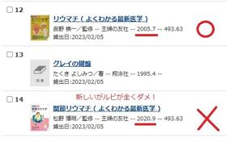
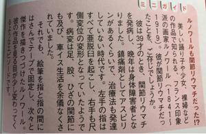
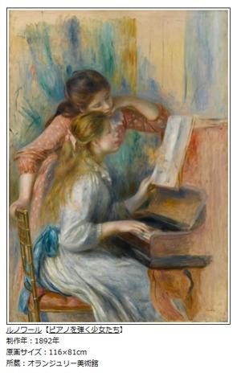
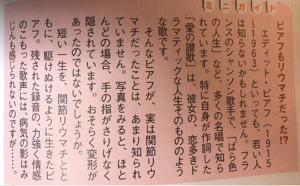

うるがいの話 ある日
最新: 良書（りょうしょ）【うるがいの話 ある日】とは 一日だけのプログです
『うるがいの話』の最新一日だけのプログで、通信料が少なく経済的だ。カニの画像をクリックすると全ての日付が載る『うるがいの話』サイトを表示します
|
|
【うるがいの話】 うるがい(ｳﾙｶﾞｲ urugai)とは、『もずくがに』の名前でとても大きくなります。 |
|---|---|
|
|
【カミマヤーの話】 猫のことを方言でマヤーといいます。カミマヤー（kamimayaa）とは、神の猫のことです。 |
|
【たながぁの音楽】 たながぁ（ﾀﾅｶﾞｰ tanagaa）とは手長えびのことで、何種類かあり大きいのは車 エビぐらいになります。 |

|
【ぶながぁの話】 ぶながぁ(ﾌﾞﾅｶﾞｰ bunagaa)とは、赤い髪の毛、赤い身体、そして身長は１ｍ２０ｃｍ ぐらい、川の蟹を食べているの目撃された。場所は沖縄県国頭郡大宜味村のと ある村僕の隣近所に住んでいる爺さんから、聞いた話です。 |
|
|
【ギーマの話】 ギーマ(giima)とは、山原の里山に咲くスズランに似た、 花を付けます。実は食べられます、 気が付くと口の周りが紫になっています。 |
2023年03月05日 (日）良書（りょうしょ）
15:06

  
リュウマチに関する本を、県立図書館から適当に２冊借りた。二つのうち適当
に一冊本を読む。漢字にルビが、あまりない。しかたなく、ネットで調べ付箋
紙に書いた。
滑膜 →かつまく
膠原線維 →コウゲンセンイ
関節窩 →かんせつか
疼痛 →とうつう
肉芽 →「にくが」もしくは「にくげ」と読む
橈骨 →とうこつ
なかなか読書が進まず、とうとう途中で返却期限がきた。返却時に未読の２冊
目は、再度借りることにした。適切なルビがふられている、ページが進んでい
くと、一度ルビを振った漢字も再度ルビがふられている。内容も丁寧で分かり
やすい！。この本は、同じ主婦の友社が出版し、分かりやすい本が２００５年
（借りた本は２版）、分かりにくい本は２０２３年なのに、監修者は異なるが
新しい本は、当然分かりやすい古い本も見ている筈なのに。新しいものがいい
とは限らない！。ところで、家に飾っている絵のルノワールも関節リュウマチ
だった。さらに、『愛の讃歌』を歌うエディット・ピアフもリュウマチだった
とミニガイドに載っていた。おっと、返却した新しい本に付箋紙を挟んだまま
だった。
１５時００分 ビットコインの総資産 ￥８、８３４（↑１５）